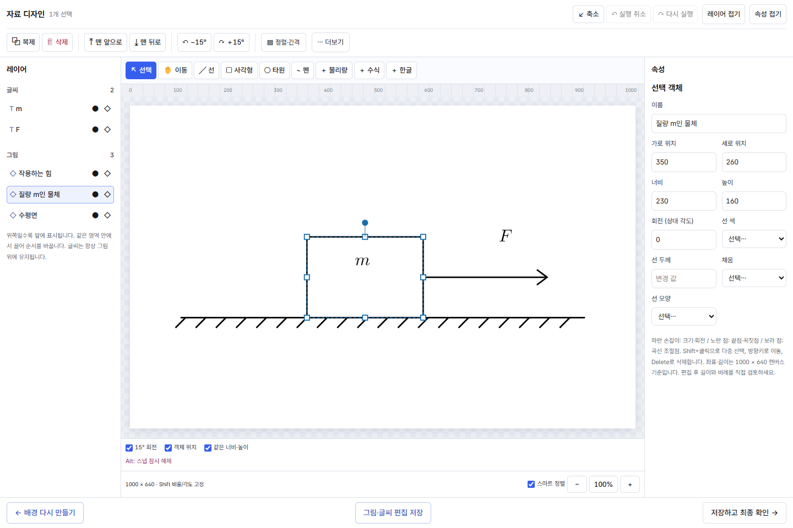
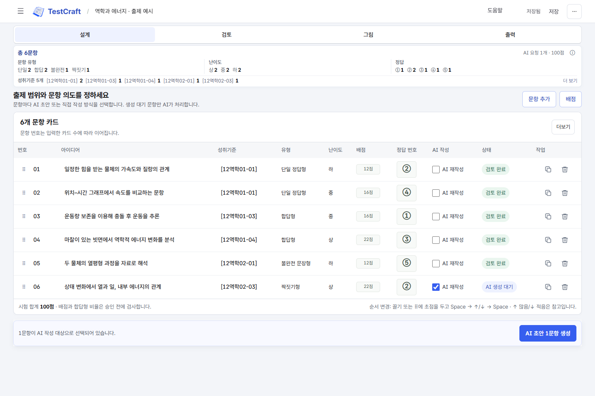
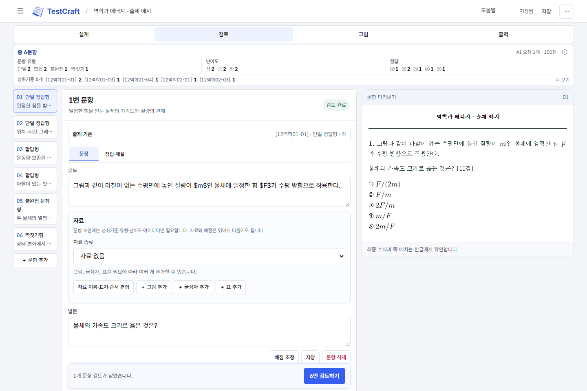

교사를 위한 시험공방
평가의 의도를 담아,
시험을 빚다.
어떤 생각을 묻고 싶은지에서 시작하세요.
문항 설계부터 AI 초안, 자료 그림, 시험지 완성까지.
선생님의 출제 과정을 한 작업실에 담았습니다.
v1.1.2 · Windows 10/11 · 64비트
AI 기능에는 Codex를 사용할 수 있는 유료 ChatGPT 계정이 필요합니다.

하나의 작업실, 네 번의 집중
출제는 하나의 흐름이니까.
파일과 도구 사이를 오가는 대신,
지금 필요한 판단에 집중하세요.
- 01설계
성취기준과 묻고 싶은 생각을 정합니다.
- 02검토
문항·정답·배점을 살피고 승인합니다.
- 03그림
자료를 만들고 객체와 글씨를 다듬습니다.
- 04출력
시험지와 해설을 파일로 완성합니다.
네 가지 기준으로, 문항의 방향을.
성취기준·문항 유형·난이도·핵심 아이디어를 입력하세요. AI 초안과 직접 작성 중에서 선택하고, 문항 분포를 보며 시험 전체의 균형을 잡습니다.

초안은 AI가, 마지막 판단은 선생님이.
문두·발문·보기·정답과 해설을 미리보며 고칩니다. 검토와 배점, 전체 문항카드 승인을 마친 뒤에 실제 그림 제작과 출력으로 넘어갑니다.

실제 앱에 공개용 예시 문항을 넣은 화면입니다. 이미지 클릭 시 원본을 볼 수 있습니다. 버전에 따라 배치가 다를 수 있습니다.
처음부터, 함께 만드는 시험
보고, 바로 따라 하세요.
실제 작업실을 조작하며 설명하는 7편의 안내.
앱의 도움말에서는 현재 화면에 맞는 영상과 화면 안내를 만납니다.
실제 앱 조작 녹화 · 대기 구간 단축 표시 · 공개용 예제 사용 · 공통 오리지널 음악 Quiet Precision
끝은, 바로 쓸 수 있는 파일로
시험지와 답지까지
같은 흐름 안에서.
한글 수식을 담은 학생용·교사용 시험지,
정답과 해설, 문항카드를 함께 준비합니다.
HWPX 출력에는 한컴오피스 한글 설치가 필요합니다.
선생님의 다음 시험을 위해
작업실을 열어보세요.
Windows에 설치하고, Codex 계정을 연결하면 시작할 수 있습니다.
Python·Node.js·Codex CLI를 포함해 따로 준비할 필요가 없습니다.
시작 전에 확인하세요
- 운영체제
- Windows 10/11, 64비트
- AI 계정
- Codex를 사용할 수 있는 유료 ChatGPT 구독 계정. 첫 실행에서 로그인합니다.
- 한글 출력
- HWPX 변환과 수식 크기 계산에는 설치된 한컴오피스 한글이 필요합니다.
- 인터넷
- 계정 로그인과 AI 생성에 필요합니다.
앱과 소스는 AGPL-3.0으로 공개합니다. AI 구독과 한글 프로그램은 별도로 준비해 주세요.
- 1 설치하기
파일을 실행하고 설치를 마칩니다.
시작 메뉴에서 TestCraft를 엽니다. - 2 계정 연결하기
내장 CLI 확인 후 Codex 로그인을 누릅니다.
공식 인증 화면에서 로그인합니다. - 3 첫 문항 설계하기
새 시험의 과목을 고르고,
첫 문항의 출제 기준을 입력합니다.
브라우저에서 바로 쓰는 서비스인가요?
설치해서 사용하는 Windows 로컬 앱입니다. 실행하면 내 컴퓨터에서 웹앱 화면이 열립니다. 이 안내 사이트에서는 앱을 다운로드하고 사용 방법을 확인할 수 있습니다.
API 키를 준비해야 하나요?
설치 배포본은 내장 Codex CLI와 계정 로그인을 사용하므로 API 키가 필요하지 않습니다. Codex를 사용할 수 있는 유료 ChatGPT 계정이 필요하며, 이용 한도는 해당 계정의 서비스 조건을 따릅니다.
한글 프로그램 없이도 사용할 수 있나요?
문항 설계와 검토는 가능합니다. 최종 HWPX 시험지 변환에는 한컴오피스 한글이 필요합니다. 변환 시 앱이 별도의 숨김 한글 프로세스를 사용하며, 한글 프로그램과 신명 중명조 글꼴은 설치 파일에 포함되지 않습니다.
시험과 문항은 어디에 저장되나요?
새 설치의 작업물은 내 컴퓨터의 %LOCALAPPDATA%\TestCraft에 저장됩니다. 기존 Question Studio 데이터가 있으면 이전 위치를 유지합니다. AI 기능을 실행하면 선택한 문항 내용이 로그인한 Codex 서비스로 전달됩니다.
AI가 만든 문항을 바로 출력하나요?
교사가 문항과 정답·해설을 검토하고 배점을 확인한 뒤 전체 문항카드를 승인합니다. 실제 그림 제작은 승인 이후 진행하며, 완성된 그림도 최종 확인합니다. 출력한 시험지는 인쇄 전 배치와 수식을 확인해 주세요.
직접 수정하거나 재배포할 수 있나요?
소스는 GNU AGPL-3.0으로 공개합니다. 수정·재배포 시 해당 라이선스 조건을 따라 주세요. 포함된 외부 구성 요소는 각각의 라이선스를 유지합니다.